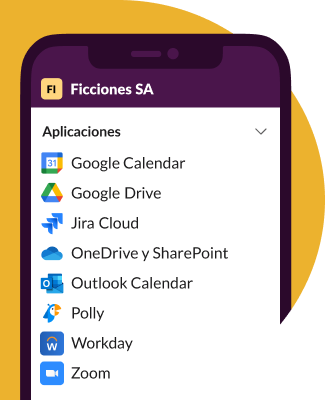

EMPRESAS DE TODO EL MUNDO YA CONFÍAN EN SLACK


Reúne a tu equipo
Los canales son el corazón de Slack. Son espacios organizados para todo el mundo que contienen todo lo necesario para trabajar. Los canales permiten conectarse entre departamentos, oficinas, zonas horarias e incluso con otras empresas.
Obtener más información sobre los canales

Selecciona cómo quieres trabajar
Slack te otorga la flexibilidad para trabajar cuando, donde y como tú quieras. Puedes chatear, enviar clips de audio y vídeo o unirte a una junta para discutir asuntos en directo.
Obtén más información acerca de la comunicación flexible

Agiliza el trabajo con todas tus herramientas en un mismo lugar
Conectar tus otras aplicaciones de trabajo con Slack te permite ahorrar tiempo al no tener que cambiar entre pestañas. Además, con herramientas eficaces como el Creador de flujos de trabajo, puedes automatizar tareas rutinarias.
Más información sobre la plataforma de Slack
Equipos grandes y pequeños confían en Slack
Conectar tus otras aplicaciones de trabajo con Slack te permite ahorrar tiempo al no tener que cambiar entre pestañas. Además, con herramientas eficaces como el Creador de flujos de trabajo, puedes automatizar tareas rutinarias.
85%
de usuarios afirma que Slack ha mejorado la comunicación.
86%
creen quesu capacidad de trabajar a distancia ha mejorado.
88%
se sienten más conectados con sus equipos.
“Hemos podido crear una amplia red virtual de empleados que se pueden comunicar como si estuvieran juntos. Hubo bastantes problemas sobre dónde trabajábamos, pero no sobre el cómo”.
Mark Smith
Responsable técnico sénior de Productos, T-Mobile
Ver más casos de clientes -->
Promedio ponderado. Basado en una encuesta de 2707 respuestas de usuarios semanales de Slack en Estados Unidos, Reino Unido, Australia y Canadá, con un margen de error de ± 2 % al 95 % CI (diciembre de 2021)
Explora con más profundidad una nueva forma de trabajar
Te damos la bienvenida a tu nueva sede digital